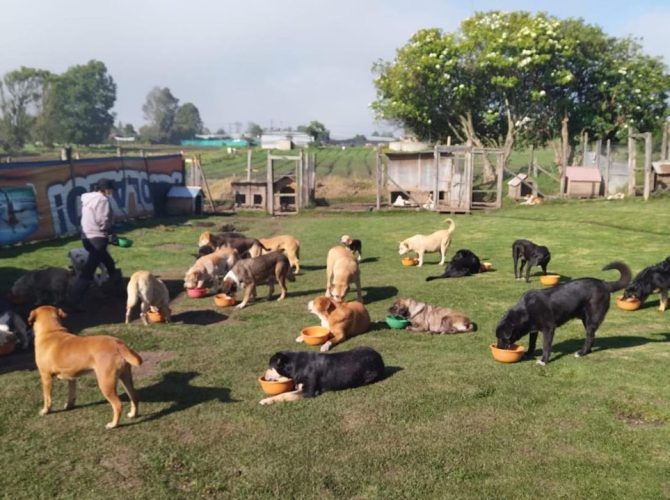

NUESTRA HISTORIA
Su historia
Patitas sin hogar es una ONG sin fines de lucro, inscrita como Asociación Civil con personería jurídica n° 6971. Estamos ubicados en Av. Dr. Benito de Miguel 596, Junín, Provincia de Buenos Aires, Argentina.
El refugio fue fundado en el año 2000 por un grupo de amantes de los animales con el objetivo de proporcionar un hogar seguro y amoroso para perros abandonados y maltratados. Desde entonces, hemos trabajado incansablemente para rescatar, rehabilitar y encontrar hogares para miles de perros necesitados.
Nuestro refugio tiene una capacidad para albergar a más de 750 perros en un entorno limpio y seguro. Nos enorgullece ser un refugio no eutanásico, lo que significa que no sacrificamos a ningún animal saludable o tratable. Cada vida es valiosa, y nos comprometemos a dar a cada perro la oportunidad de vivir una vida plena y feliz.
A lo largo de los años, hemos enfrentado desafíos, pero también hemos experimentado innumerables momentos de alegría al ver a perros maltratados convertirse en mascotas amadas. Contamos con un equipo dedicado de veterinarios, cuidadores y voluntarios que trabajan juntos para garantizar el bienestar de nuestros residentes peludos.
Patitas sin hogar no recibe subsidios, aportes de empresas ni alimento balanceado de ninguna compañía. No tenemos cuotas ni socios, pero dependemos de la generosidad de la comunidad y de los amantes de los animales para seguir adelante con nuestra misión.
El círculo que se inicia con el rescate y continúa con la recuperación culmina con la adopción. En el refugio ingresan alrededor de 100 animales destruidos cada mes, y gracias a la dedicación de nuestro equipo de adopciones, una cantidad similar encuentra hogares amorosos.

Nuestro objetivo principal es la concientización de la sociedad. Promovemos el respeto irrestricto por la vida y abogamos por el cuidado adecuado de las mascotas, la esterilización como medio de control poblacional, la adopción en lugar de la compra de animales, y el rechazo a toda forma de sacrificio o eutanasia.
Una característica distintiva de Patitas Sin Hogar es nuestro sistema de "puertas abiertas". Cualquier persona puede visitar el refugio para brindar amor a las patitas o unirse como voluntario. Fomentamos la creación de lazos entre la comunidad y los animales, promoviendo la conciencia y la participación.
El equipo de Patitas Sin Hogar está formado por 102 organizadores y más de 250 voluntarios que, cada sábado, dedican su tiempo y esfuerzo para trabajar por y para nuestros queridos animales.